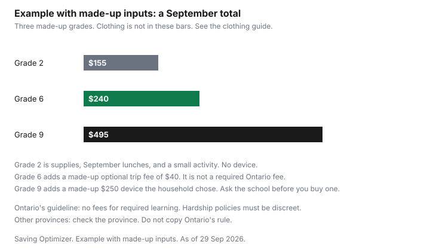

Kids · Canada
Back-to-School Costs in Canada: Supplies, Fees and Tech Without a September Shock
September stacks because several lists arrive in the same week: the supply list, a fee schedule, a lunch habit, and a device someone said was required. Ontario has a written rule for the fee part. The rest of the country does not share that page. Clothing is a separate list. Use the back-to-school clothing guide, the uniform guide if the school has one, and the kids' clothing rebate for the tax line. This page does not repeat them.
Disclosure: Cash-back portal offers are an offer type. Saving Optimizer may earn a commission if a partner link is added later. No partnership is claimed. A portal does not change a school list or a fee the board is allowed to charge. Education only. This is not tax or school-policy advice.
Key takeaways
- Ontario's guideline says schools cannot charge for required learning and activities that students must do. Hardship policies must identify families discreetly.
- Other provinces: check the province. Do not copy Ontario's list of ineligible fees.
- The National School Food Program Act received Royal Assent on 26 March 2026. Ask the school whether a meal is offered. The Act does not name your school.
- A personal laptop is a purchase only after the school says one is required and is not supplied. Ontario lists computers among materials a board funds when they are needed to meet expectations.
- Example with made-up inputs: grade 2 $155, grade 6 $240, grade 9 $495. Those are not school invoices.
Start with the school list and what the school supplies
The list that matters is the one from your school, for this year, for this grade. A flyer from a store is a catalogue.
Cross off anything the classroom already has for required work: the textbook, the workbook the course needs, the safety goggles for a lab, the instrument the music class requires. In Ontario those are examples of materials the guideline says are ineligible for a fee when they are required to complete the curriculum. If the list still asks you to buy one, ask the school which line is a required material the board should provide and which line is optional.
Write three columns before you shop. Column one is on the school list and the school does not provide it. Column two is on the list and the school does provide it, so you do not buy a second copy. Column three is not on the list. Column three can wait. A decorative pencil case in column three is how a $12 list becomes a cart. Shared household items — one pair of scissors, one ruler, one calculator if the list allows a shared one — go on the list once.
School fees: what Ontario's guideline allows and asks in other provinces
Ontario's Ministry of Education page, Fees for learning materials and activities at schools, is a guideline for publicly funded boards and schools, checked 29 Sep 2026. It says schools cannot charge fees for required learning and activities that students must do.
In general there should be no fees for day school programs, other than tuition for non-resident students. The page says the guideline does not cover tuition for visa students, international students, First Nations students attending under a tuition agreement, adult or continuing education, or fees for early learning and before- or after-school programs. On legal questions the page tells boards to rely on their own counsel. This guide is the household reading of that page. It is not a ruling on a fee you were charged.
A fee may be appropriate when at least one of three tests is met: the activity, material, course, or program is not required as part of the regular day school program; it is non-essential or extracurricular and not required for graduation; or it is a voluntary upgrade to a more costly material while the material provided for the course stays available. Student activity fees are voluntary amounts that supplement the school experience. If a student declines enhanced materials, alternatives must exist, and the school must provide at no cost the essential materials required to meet the learning expectations.
The ineligible examples on the page include a registration or administration fee for a regular day program; a textbook fee or deposit other than repair or replacement of lost or damaged materials; required workbooks, musical instruments, science supplies, lab kits, and safety goggles; a mandatory flat fee for a course leading to graduation other than optional programming; a guest speaker or in-class field trip when the material is a mandatory part of the course; consumables required for the course, such as a chemical in a chemistry experiment; and items funded through the board's allocated budget, including learning materials necessary to meet expectations such as computers, workbooks, and textbooks. Potentially eligible examples include optional programming such as Advanced Placement, extracurricular trips that are not required for graduation, extended trips that are not necessary to meet expectations, optional higher-quality art or music supplies when the required materials are free, and a field trip if students who do not go still have an alternative assignment.
Board policies must address financial hardship so a student can take part regardless of economic circumstances. The dignity line is specific: collection methods should afford a reasonable expectation of privacy, and the practice for discreet identification of students or parents in hardship must be clearly communicated. Policies are to be public on the board website. Principals may consider modest fees for agendas, yearbooks, dances, clubs, photographs, and extracurricular athletics. The fee should reflect the actual cost. An itemized list, with the reason for each fee, and the hardship process should be available. Ask for that list. A single "student fee" with no lines is not the itemized list the guideline describes.
| Situation | Ontario guideline |
|---|---|
| Required learning and activities students must do | Cannot charge a fee. |
| Textbook fee or deposit | Not allowed, except replacement or repair of lost or damaged materials. |
| Required workbook, instrument, science supplies, lab kit, safety goggles | Listed as ineligible when required to complete the curriculum. |
| Computers, when they are learning materials necessary to meet expectations | Listed among items funded through the board budget and ineligible for a fee. |
| Voluntary upgrade, extracurricular not required for graduation, or something outside the regular day program | A fee may be appropriate. The required material or an alternative assignment stays available at no cost. |
| Student activity fee | Voluntary. A principal may consider a modest fee for agendas, yearbooks, dances, clubs, photos, and extracurricular athletics. It should reflect actual cost. |
| A family that cannot pay | The board policy must address hardship. Identification is discreet, respectful, and clearly communicated. |
Outside Ontario, this guide does not copy that table onto another province. Check the ministry or the board that runs your school, and use the fee schedule the school publishes for this year. A credit for a sports or arts program you pay for outside school is a tax question, not a school-fee question. The activity-credit guide is the provincial pages. It is not a permission slip for a school fee.
Supplies: reuse, bulk and timing
Reuse what still works: a binder with rings, scissors, a ruler, a geometry set, headphones the list allows. Replace what is broken or what the list specifies by brand or colour when the school will not accept a substitute.
Buy the count the list names. A bulk box of pencils for a household that will use them through June is a smaller unit price only if you will use them. A bulk box that sits until the children have left that grade is storage, not a saving.
Timing follows the list, not a sale calendar. Buy the first-week items when the list arrives. Black Friday is Friday 27 November 2026, Cyber Monday is Monday 30 November 2026, and Boxing Day is Saturday 26 December 2026. Those are calendar dates after school has started. A November or December sale can refill paper and pencils for January. It does not put a September list in the bag. A cash-back portal is a checkout extra. It does not make an item that is not on the list into a required supply.
School lunches and the National School Food Program
The National School Food Program Act, S.C. 2026, c. 3, s. 599, on the Justice Laws site, is current to 21 September 2026 and was checked 29 Sep 2026. It received Royal Assent on 26 March 2026 and came into force on assent.
Section 4 says the purpose is to set out the Government of Canada's long-term vision for the program, its commitment to maintaining long-term funding, and the principles that guide federal investments. The preamble says the Government collaborates with and provides funding to the provinces, the territories, and Indigenous governing bodies. The declaration says it is important to cooperate with those governments in delivery. None of that text names a school, a menu, or a price for a lunch.
Ask the school what is offered this year, on which days, and whether a family still sends food. Check Employment and Social Development Canada's page on how the program is taking shape: the June 2026 news release. This guide does not state which provinces have signed. Availability varies by school. A lunch you still make at home is groceries. Price it on the family grocery guide, not as a school fee. If the school sells milk or a hot lunch as an optional purchase, it belongs on the worksheet as a lunch line you can set to zero.
Devices: what's required vs nice
Ontario's ineligible-fee list includes computers when they are learning materials necessary to meet expectations and are funded through the board budget. That is a rule about a fee.
It is not a shopping list, and it is not a statement that every student already has a device on the desk. Ask the school, for this grade, three questions: is a personal laptop or tablet required; does the school supply one; if you decline to buy one, is there an alternative that still meets the expectations. Buy only after those answers are yes, no, and no. A device the household wants for home use is a different purchase. This page does not name a model.
Apps that ride on that device are subscriptions. The kids' app guide is where a monthly charge gets a review date. Do not add an app because a classmate has it. Add it when the school names it and a free account will not do the assigned work.
A September budget
The blank worksheet is the one you keep. One row per child, for the grade they are in this September.
Supplies are column-one items from the school list. Fees are lines on the board's itemized schedule that you have checked against the Ontario rule, or against your own province's rule. Lunches are the month of food you will actually send or buy, not a school-year guess. Devices stay at zero until the school has answered the three questions. Activities are voluntary clubs and trips, including any sports or arts fee you will look at on the activity-credit guide. Clothing stays off this sheet.
| Line | What goes here | Your amount |
|---|---|---|
| Supplies | Items on the school list that the school does not provide. | |
| School fees | Itemized voluntary or eligible fees. In Ontario, required learning is not a fee. | |
| Lunches | September food you will send or buy. A school meal program can lower this line. Ask the school. | |
| Devices | Zero unless the school requires a personal device and does not supply one. | |
| Activities | Clubs, teams, and optional trips. Not a required course fee. |
Example with made-up inputs. The household has two children. The table shows three September sketches — grade 2, grade 6, and grade 9 — so the bars are not the same height. Use only the grades your children are in. The grade 6 fee of $40 is a made-up optional trip. It is not a required Ontario fee. The grade 9 device of $250 is a device the household chose. It is not a price from a school, and it is not evidence that a laptop is required.
| Grade sketch | Supplies | Fees | September lunches | Device | Activities | Total |
|---|---|---|---|---|---|---|
| Grade 2 | $65 | $0 | $60 | $0 | $30 | $155 |
| Grade 6 | $80 | $40 | $70 | $0 | $50 | $240 |
| Grade 9 | $90 | $25 | $90 | $250 | $40 | $495 |

Sources & date stamps
- Ontario Ministry of Education, Fees for learning materials and activities at schools, checked 29 Sep 2026. No fees for required learning and activities. Hardship policies with discreet identification. Computers listed among board-funded materials that are ineligible for a fee when necessary to meet expectations. Examples are not a complete list.
- National School Food Program Act, S.C. 2026, c. 3, s. 599, Justice Laws, Act current to 21 September 2026, checked 29 Sep 2026. Royal Assent 26 March 2026, in force on assent. Purpose in section 4 is the federal vision, the funding commitment, and the principles for investment.
- Employment and Social Development Canada, news on the National School Food Program, June 2026. Check that page and the school for whether a program runs where you live. This guide does not state a province-by-province list.
- The grade totals of $155, $240, and $495, and every cell inside them, are an example with made-up inputs.
Frequently asked questions
What school fees are allowed in Ontario?
Ontario's guideline says schools cannot charge for required learning and activities that students must do. A fee can fit when the activity is outside the regular day program, is extracurricular and not required for graduation, or is a voluntary upgrade while the required material stays free. Student activity fees are voluntary, and boards must address financial hardship with discreet identification. Other provinces use their own rules, so check your province and your board's published schedule.
How can I cut the cost of school supplies?
Start with the list the school sent, and cross off anything the school already provides for required work. Reuse last year's binders, rulers, and scissors if they still work, and buy shared items once for the household instead of once per child. A cash-back portal does not change the list: the price is the checkout total. Clothing belongs on the back-to-school clothing guide, not on this list.
Does my child's school have a food program?
The National School Food Program Act received Royal Assent on 26 March 2026 and came into force that day. Its purpose is the federal vision, a funding commitment, and principles for working with provinces, territories, and Indigenous governing bodies. It does not itself place a meal in a named school. Ask the school what is offered this year, and check Employment and Social Development Canada for the program.
Does my child need a laptop for school?
Ontario's guideline lists computers among materials that cannot be charged as a fee when they are necessary to meet learning expectations and are funded through the board budget. That sentence is not an order to buy a personal laptop. Ask the school whether a device is required, supplied, or optional, and do not buy one on a rumour. This page does not name a model.
When is the best time to buy school supplies?
Buy what the first week requires when the list arrives, because the school year does not wait for a sale. Black Friday is Friday 27 November 2026, Cyber Monday is Monday 30 November 2026, and Boxing Day is Saturday 26 December 2026. Those dates come after September. A later sale can refill a list for January, and it does not stock the first day.
Researched and drafted with AI assistance and fact-checked against official Canadian sources. How we create content.